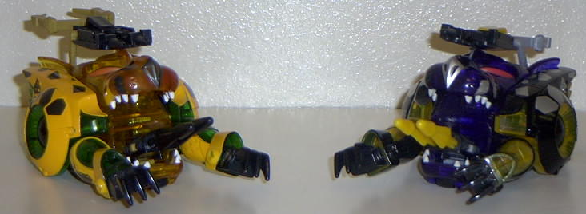

Beast
Machines Beast Riders & Deployers
Beast
Machines Beast Riders & Deployers

In the early summer of 2000,
Hasbro released the Beast Riders, and a few months later, the Deployers
as well. These toys were both sublines of the Beast Machines Transformers
toyline. Both were fresh new ideas, but neither of them caught on that
well, and thusly, only 2 Beast Riders and 3 Deployers were made.
The Beast Riders were "transforming"
vehicles that sold for about $7.99 in the U.S., but because of their simiplistic
construction, were actually between the sizes of Deluxes and Megas. Both
Beast Riders had a similar design structurally, and the only difference
between the two were the detailing and shape of certain parts. The transformations
were a joke, however, and involved little more than rotating claws and
revealing a few extra weapons. Beast Riders were made for other Transformers
to ride into battle, as a sort of "accessory".
The Deployers, on the other
hand, all had completely different designs. They were mechanical animals
that transformed into weapons, and sold for about $4.99 in the U.S., because
they were smaller than even basic toys. Unfortunately, although they were
pretty small, they were too large to fit in all but the largest of Transformer's
hands, and even then, they didn't fit that well. Still, mobile weapons
platforms were pretty neat, and Deployers sold a bit better than their
Beast Riders brethren.
In early 2001, repaints of
all of the Deployers and Beast Riders came out. Originally, these were
all supposed to be a second wave of the Beast Riders and Deployers, but
for some reason, Hasbro neglected giving these repaints new names or packaging.
All reviews below cover both the original versions and the repaints.
Beast Riders
 Che
Che
Mechatron
Deployers
Dillo
Mol
Rav
Back to Model
Commentary Index